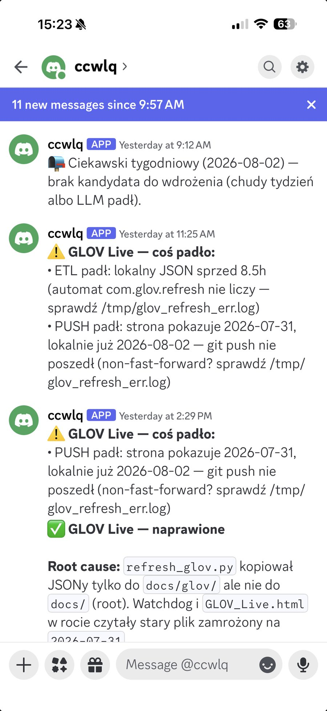
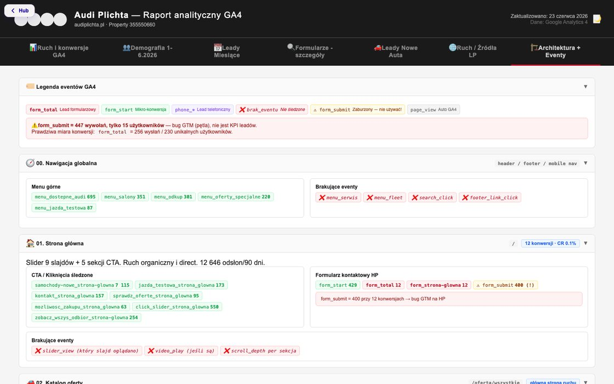
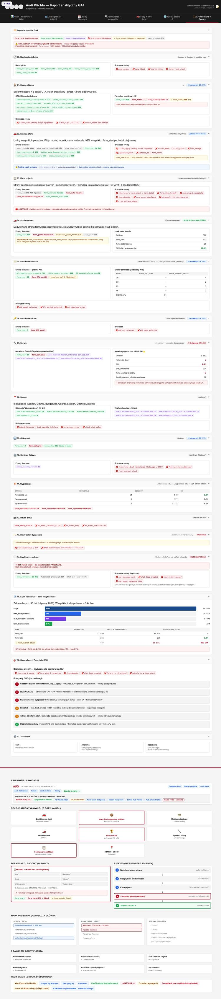
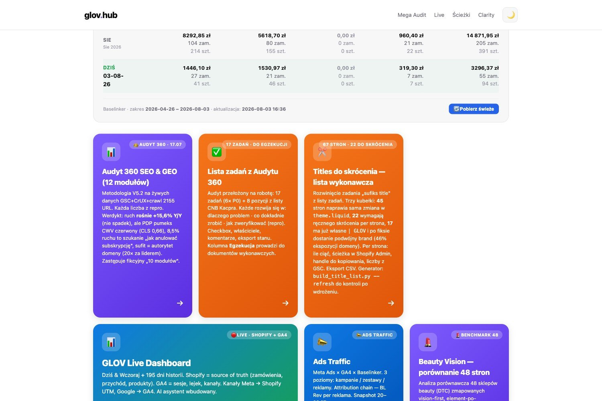
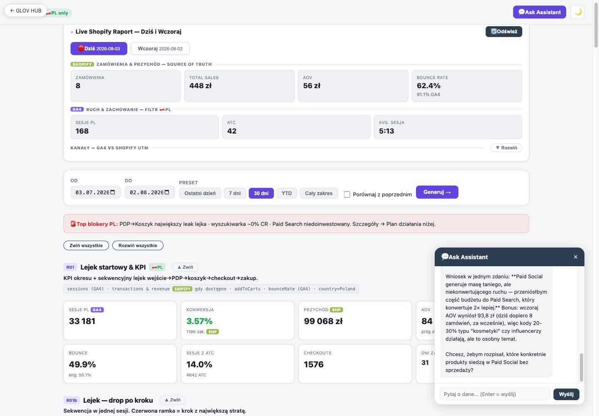
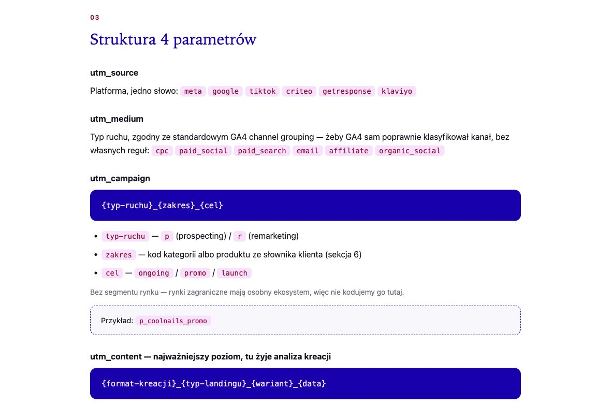
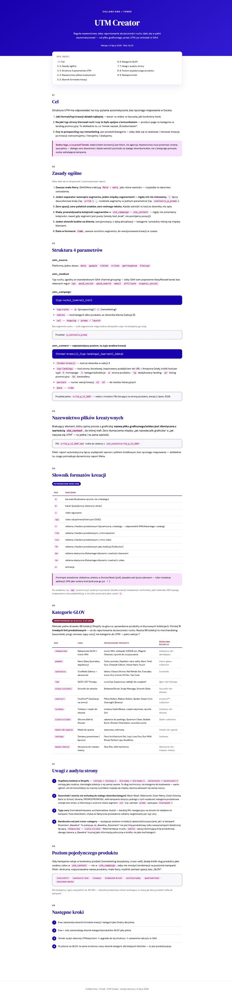
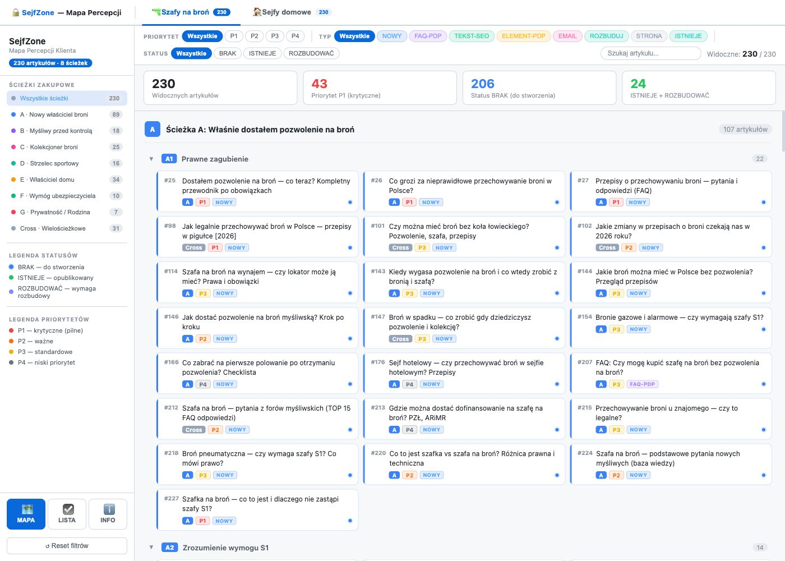
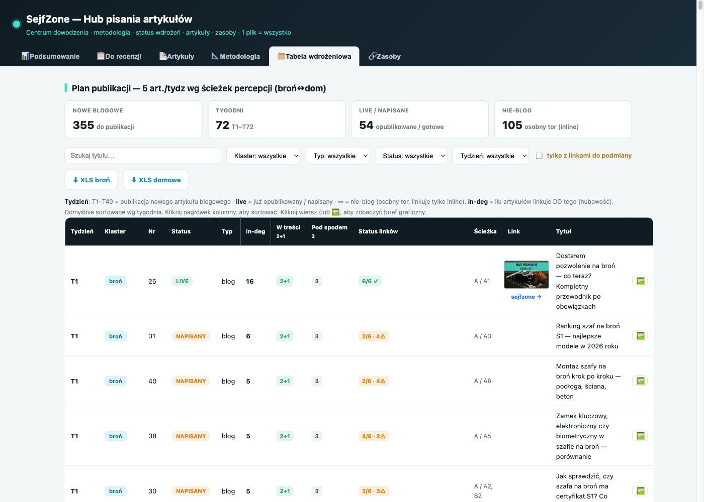
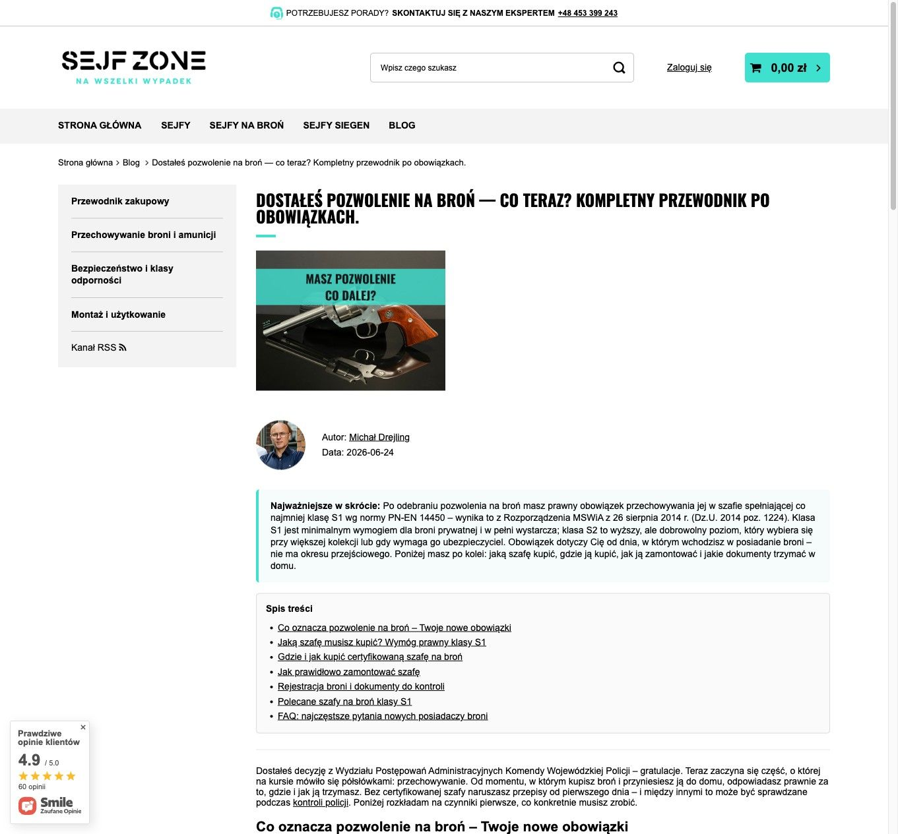

Referencje realizacji
Każdy zrzut ekranu można powiększyć kliknięciem.
Kanał alertów krytycznych — działa u innego klienta
Agent pilnuje konfiguracji na żywo. Gdy pomiar albo integracja przestaje działać, wiadomość idzie na kanał zespołu tego samego dnia — razem z tropem, gdzie szukać przyczyny. Poniżej realna wymiana z ostatniego tygodnia.

11:25 — coś padło. Dwa niezależne problemy w jednej wiadomości: proces przetwarzania danych stanął osiem godzin wcześniej, a publikacja nie doszła — strona pokazywała dane sprzed dwóch dni. Przy każdym punkcie trop: który proces i który log sprawdzić.
14:29 — naprawione. Ta sama nitka domknięta informacją o przyczynie: skrypt kopiował dane tylko do podkatalogu, więc pulpit czytał plik zamrożony na starej dacie.
Trzy godziny od wykrycia do naprawy — bez tego alertu nikt nie zauważyłby niczego, bo pulpit dalej pokazywał liczby. Tylko nieaktualne.
Dlaczego to jest ważne u Was. Zdarzenia widmo w Waszym GA4 działały miesiącami i nikt tego nie zauważył, bo raport zawsze coś pokazywał. Alert łapie moment, w którym pomiar przestaje mówić prawdę — nie kwartał później, przy analizie wyników.
Odbiorcy do ustalenia: opiekun po naszej stronie i osoba decyzyjna po Waszej. Kanał może być na Waszym komunikatorze zespołowym.
Audyt architektury i eventów — serwis Audi Plichta
Czerwiec 2026, przed złożeniem tej oferty. Z tego audytu pochodzi większość liczb w całym komplecie.


Stąd wzięło się 447/15. Zdarzenie wysłania formularza odpala się 447 razy przy 15 użytkownikach — to błąd tagowania, nie wskaźnik leadów.
Stąd wzięła się lista braków. Przy każdej sekcji czerwone pozycje to zdarzenia, których nie ma: wejście w serwis, kliknięcia w wyszukiwarkę, głębokość przewijania, odtworzenia wideo.
Ten sam typ audytu jest pierwszym krokiem w zakresie Z1 — tylko dla wszystkich Waszych usług pomiarowych.
Weryfikacja formularzy — serwis Audi Plichta
Osiem formularzy zestawionych z danymi GA4: ile osób zaczęło wypełniać, ile wysłało, jaki jest współczynnik. Każdy ze zrzutem ekranu.

Widać różnicę między form_start a konwersją dla każdego formularza osobno: nowe auta 428 → 18, jazda testowa 24 → 13, Audi Perfect Lease 15 → 12.
Nie same liczby. Przy każdym formularzu jest zrzut ekranu — bo bez obrazu nie widać, dlaczego jeden ma 4,2%, a drugi 80%.
Hub klienta — jedno miejsce zamiast rozproszonych plików
To samo podejście, które u Was nazywa się Mission Control. Wszystko, co dotyczy jednego klienta, wchodzi przez jeden adres: raporty, audyty, listy napraw, pulpity z danymi na żywo.

Jeden adres, nie dwadzieścia plików. Zamiast szukać w mailach, którą wersję raportu otwierał ktoś ostatnio, wchodzi się w jedno miejsce i widzi aktualny stan wszystkiego.
Hub rośnie razem ze współpracą. Każdy nowy audyt, dashboard czy lista zadań dokłada się do tej samej struktury, zamiast lądować w osobnym pliku na czyimś dysku.
U Was tę rolę pełni Mission Control — z tą różnicą, że dochodzą do niego dane na żywo z kampanii, CRM i sprzedaży.
Mission Control dla Was →Pulpit wyników z asystentem — wdrożenie u innego klienta
Dane kampanii i sprzedaży w jednym miejscu. Pytania do danych zadaje się normalnym językiem — bez budowania raportu.

Nie kolejny panel do klikania. Pulpit zbiera dane dzienne z reklam i sprzedaży, a asystent odpowiada na pytania w rodzaju „która kampania traci w tym tygodniu i dlaczego”.
To jest ten sam mechanizm, który u Was opisujemy jako interaktywny asystent w kokpicie Mission Control.
Kokpit dla Was →Połączona analityka kampanii — wdrożenie u innego klienta
Meta Ads × GA4 × platforma sprzedażowa w jednym zestawieniu. Ten sam problem, który opisujecie w briefie: algorytm uczy się na zgłoszeniach, nie na sprzedaży.

Trzy soczewki tego samego ROAS. Piksel reklamowy pokazuje 2,67. GA4 na ostatnim kliknięciu — 1,37. Zestawienie z rzeczywistą sprzedażą — 1,91. To ta trzecia liczba jest wiarygodna, a widać ją dopiero po połączeniu źródeł.
Wnioski, nie tabelka. Pod zestawieniem: która kampania skaluje, która jest kandydatem do cięcia, gdzie ścieżka gubi ludzi przed finalizacją.
U Was ten sam mechanizm dotyczy CPL i CPS — koszt kontaktu i koszt sprzedanego auta w jednym miejscu. Jak to wygląda w Waszym przypadku, opisujemy w zakresie Z1.
UTMomat — narzędzie działa w produkcji
Słownik tagowania ruchu wdrożony u innego klienta. Nie makieta — z tego korzysta zespół.


Jedna reguła zamiast pięciu wersji tej samej nazwy. Kampania, źródło, treść i termin nazwane tak samo przez wszystkich, którzy uruchamiają ruch.
Bez tego raport pokazuje piętnaście źródeł zamiast pięciu — a decyzja budżetowa opiera się na sklejonych danych.
Jak to działa u Was →Metoda widoczności w AI — wdrożona i opublikowana
Mapy percepcji i treść budowana pod pytania, które ludzie zadają asystentom AI. Publiczne wdrożenie, do obejrzenia.
| Wdrożenie | Co zawiera | Link |
|---|---|---|
| Mapa percepcji — kategoria konsumencka | 230 artykułów w dwóch kategoriach, ścieżki decyzyjne A–G, pole pytań | Zobacz → |
| Pulpit wyników kampanii | Dane dzienne, porównania okresów, sekcje R01–R10, asystent do pytań | Zobacz → |
| Standard treści kategorii | Struktura wpisu, pytania do pokrycia, mapa konkurencji | Zobacz → |
Od mapy pytań do opublikowanej treści — pełna sekwencja
Ta sama metoda, którą proponujemy dla Was w zakresie Z4. Jedno pytanie — #25, „Dostałem pozwolenie na broń, co teraz" — przechodzi przez trzy ekrany tego samego procesu, u realnego klienta.

Pytanie #25 wchodzi do backlogu z priorytetem i statusem: jest odpowiedź, brakuje, do rozbudowy. To jest backlog treści, nie burza mózgów.

Ten sam numer #25 trafia do kolejki produkcyjnej: tydzień T1, status LIVE, widać linkowanie i to, co jeszcze czeka na tym samym torze.

To samo pytanie #25, teraz jako opublikowany artykuł z autorem i datą — napisany tak, żeby dał się zacytować w odpowiedzi asystenta AI, a nie tylko wypełnić słowa kluczowe.
U Was ta sekwencja startuje od map percepcji zakupu samochodu — sześć kategorii jest już zbudowanych, dwie dobudowujemy. Plan publikacji na kwartał opisuje dokument Założenia strategiczne GEO / SEO.
Plan dla Was →